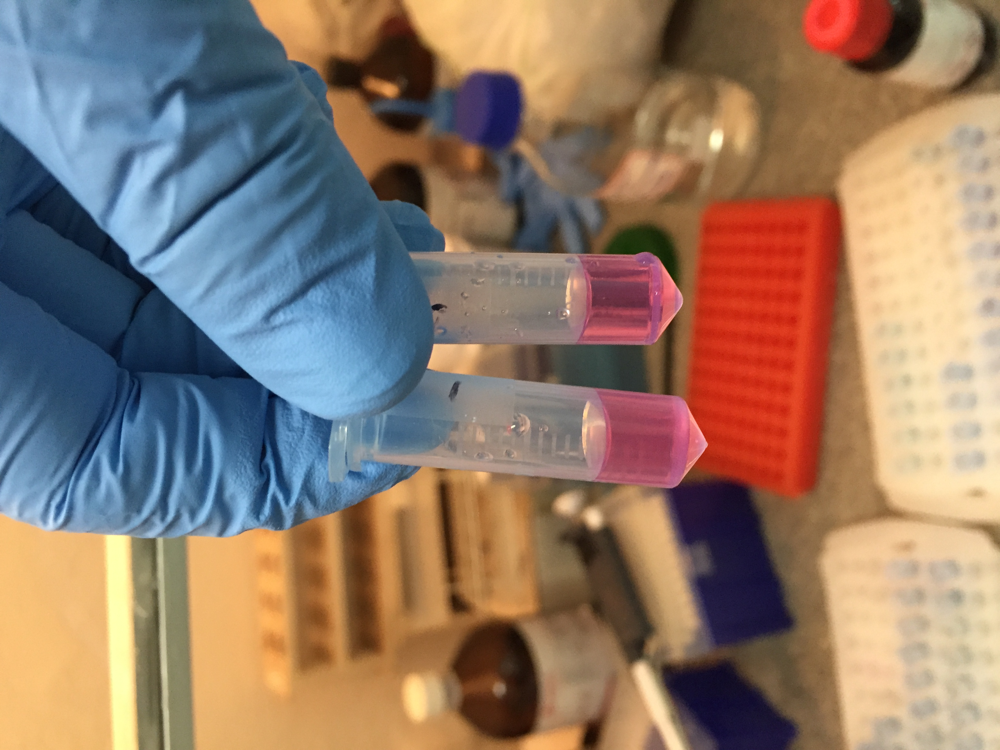
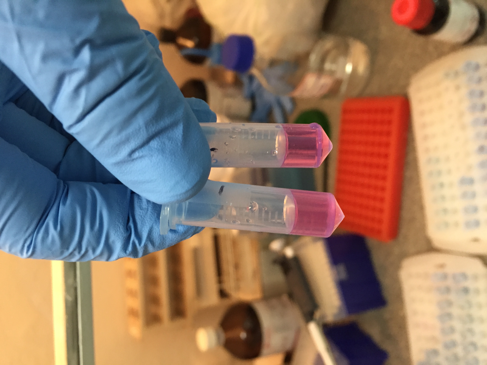

Joanna Malukiewicz, PhD

Hybridization - Platyrrhines - Microbes
Genomics - Microbiomes - Immunogenetics

Post-doctoral Researcher, Instituto de Medicina Tropical, Universidade de São Paulo, SP, Brazil
Guest Researcher, German Primate Center, Göttingen, Germany
Research

 

As an evolutionary genomicist I combine field work, molecular biology, and bioinformatics and apply 'omics' approaches to understand the evolutionary consequences of platyrrhine hybridization in speciation, biodiversity, and health.
The Callithrix genus of small, charismatic marmosets and their microbes represents my main biological study system. I maintain this work as an independent line of research thru international collaboration and with funding that has included a US National Science Foundation DDIG Grant, a Fulbright Fellowship, a Brazilian CNPq Young Talents Fellowship (302044/2014-0), and an EU Marie Curie-Skłodowski Individual Fellowship (AMD-793641-4). I have also started recent collaborations on the population genomics of two South American howler monkey species ( Alouatta caraya and Alouatta guariba clamitans ) with Prof. Dr. Christian Roos from the German Primate Center and golden lion tamarin (Leontopithecus rosalia) gut microbiome with Dr. Mirela D'arc from the Federal University of Rio de Janeiro. My partnership institutions within Brazil include CEMAFAUNA , DEPAVE3, Tietê Ecological Park , Institute for Tropical Medicine at USP, Rio de Janeiro Primatology Center , SERCAS at UENF, and the Guarulhos Municipal Zoo .

Callithrix Speciation and Hybridization Genomics
Although the common marmoset (C. jacchus) is a highly-prized biomedical model, we surprisingly still know very little about marmosets from an evolutionary and genomics point of view. Marmosets are unique among primates for their small derived size and frequent twinning but also show morphological, ecological, and dietary interspecific differences. I have been working in Brazil since 2011 as an independent researcher to elucidate the evolutionary history of Callithrix species. I have used classical genetics as well as cutting-edge genomics to resolve the phylogeny and divergence times of marmosets. With low- to medium-coverage short read sequencing, my work is helping us understand for the first time levels of genomic diversity within and between marmoset species populations within Brazil. Thru these data, we are also uncovering candiate positive selection genes in marmoset species as well as speciation candidate genes. In the future, my collaborators and I will carry out large scale sampling and genomics studies of marmoset species within their native Brazilian habitats to continue gaining further insights into these unique primates.
Hybridization is a powerful evolutionary force, and my doctoral work provided the first evidence for natural and human driven (anthropogenic) marmoset interbreeding in the wild. My post-doctoral genomics research further showed that southeastern Brazil is actually a hotspot for marmoset anthropogenic hybridization. In having produced the most robust Callithrix phylogeny and divergence times to date, I have facilitated our understanding of why marmoset species like common (C. jacchus) and black-tufted (C. penicillata) marmosets hybridize more easily than others. Human-driven introductions of exotic common and black tufted marmosets and complex species interbreeding are actually changing the genomic make-up of marmoset populations in southeast Brazil. I am currently analyzing whole genome resequencing data from anthropogenic hybrids and parental species to understand patterns of global and local admixture and anthropogenic introgression among free-ranging marmosets in southeast Brazil. Future efforts will include boarder sampling as well as the application of long-read, haplotype aware genomic techniques to develop a finer grain understanding of the role of hybridization in shaping marmoset diversity and evolution.

Viral Disease Susceptibility in Platyrrhine Species and Hybrids
Anthropological genomics shows that hybrids may have a selective advantage to pathogenetic disease susceptibility. Given frequent hybridization in non-human primates, as well as recent viral pandemics, I am interested in the following question: How does the host genomic profile of anti-viral immune genes of primate species and their hybrids affect primate susceptibility to pathogenic disease? In platyrrhines (North, Central, and South American primates), addressing this question is complicated by our limited understanding of the immunogenetics of these primates. As my other work shows wide-spread hybridization in marmosets, I am using these primates to as models to characterize diversity and structure of key marmoset immunogenetic regions involved in immune response against viral infection. The major focus of this work is the major histocompatibility class I region of the marmoset genome. This regions is responsible for altering key immune cells ike T-cells and Natural-Killer cells about invading microbes like viruses. The MHC region (also known as HLA in humans) is notoriously difficult to study due to occurrence of gene duplications and repetitive sequences in the region. I am overcoming this challenge by combining targeted hybridization sequence capture with Oxford Nanopore long-read sequencing to sequence the MHC region. These genomic data are being combined with host genomic and virome data to develop generalized linear models to test the hypothesis that hybrids are less susceptible to viral disease.
Recent outbreaks of deadly Yellow Fever virus (YFV) in Brazil have shown that primate species differ in their susceptibility to this virus. To better understand why, I have begun two new collaborations with Drs. Ric del Rosario (Broad Institute) and Christian Roos (German Primate Center) using whole genome sequencing data from marmosets and howlers to look at genetic diversity and evolution of their immune genes. These two genera show dramatic differences in their YFV immune response. My future work in this area will include these two genera to investigate the role that hybridization and species-specific differences play in primate YFV susceptibility by integrating evolutionary genomics, viral metagenomics, and single-cell transcriptomics.

Black-tufted Marmoset (Callithrix penicillata) Reference Genome
Well-assembled and annotated high-quality genomes allow for more powerful comparative and population-level investigations of natural selection, structural variation, and complex genomic regions. In collaboration with Drs. Reed Cartwright (Arizona State University), Jeff French (University of Omaha-Nebraska), and Dr. Montserrat Torres-Oliva (University of Kiel), I am leading a project to generate an annotated de novo assembly of the C. penicillata genome (only C. jacchus assemblies are currently available and my work shows this is the sister lineage to C. penicillata). Custom annotation of the 2.6 GB C. penicillata assembly has resulted in 18,012 annotated protein coding genes and a 92.3% BUSCO score. Comparative genomics show the contraction of key immune genes within key immunogene families in C. penicillata. By using a combination of comparative and population genomics, I also have identified candidate selection genes and enriched pathways involved in insulin metabolism that may have allowed C. penicillata to adapt to extreme semi-arid biomes, as one of the few platyrrhines to do so.

Callitrichid Gut Microbiome
Mammalian captive dietary specialists like folivores are prone to gastrointestinal distress and primate dietary specialists suffer the greatest gut microbiome diversity losses in captivity compared to the wild. Marmosets represent another group of dietary specialists, exudivores that eat plant exudates (gums and resins), and I have lead the very first two projects looking at diversity of function of the gut microbiome of wild and captive marmosets within Brazil. Both projects looked at the gut microbiome of various marmoset species and hybrid types, but the first project used 16S rRNA gene sequencing and the second used shotgun whole genome sequencing. Wild Callithrix gut microbiomes were enriched for Bifidobacterium, which process the types of host-indigestible carbohydrates found in plant exudates eaten by marmosets. Captive marmoset guts were enriched for Enterobacteriaceae, a family containing pathogenic bacteria. Enterobacteriaceae seem to carry out most functional activities in captive host guts. More diverse bacterial taxa seem to perform gut functions in wild marmosets, with Bifidobacterium being important for carbohydrate metabolism. Captive marmosets showed gut microbiome composition aspects seen in human gastrointestinal diseases. Thus, this work showed that captivity may perturb the exudivore gut microbiome, which raises implications for captive exudivore welfare and calls for husbandry modifications. I have presented these results to several academic and biomedical groups as an invited speaker.
Malukiewicz et al., 2022, Scientific Reports
The shotgun whole genome sequencing project was carried out as a collaboration with Dr. Mirela D'arc (Federal University of Rio de Janeiro), representing an expansion of my work into other callitrichids - the highly endangered golden lion tamarin (GLT-Leontopithecus rosalia). The findings of this study are consistent with my previous work in showing that Bifidobacterium is an important component of the callitrichid gut microbiome. However, GTLs and marmosets were enriched for different species of Bifidobacterium. Additionally, the composition of GLT and marmoset gut microbiota is sensitive to host environmental factors. Overall, our data expand baseline gut microbiome data for callitrichids to allow for the development of new tools to improve their management and conservation.
CV and Publications
Google Scholar Profile
ORCID Profile
Brazilian Lattes CV
Manuscripts In Prep
Joanna Malukiewiczet al. The genome of the black-tufted marmoset provides new insights into the immunogenetics and evolutionary history of Callithrix.
Joanna Malukiewicz et al. Morphometric variation in Callithrix species and anthropogenic hybrids.
Joanna Malukiewicz et al. Evolutionary insights in Callithrix from low-coverage marmoset speciation and hybridization genomics.
Peer Reviewed Publications
Submitted
Joanna Malukiewicz, Mirela D’arc, Ceclia A. Dias, Reed A. Cartwright, Adriana D. Grativol, Silvia Bahadian Moreira, Antonizete R Souza, Maria Clotilde Henriques Tavares, Alcides Pissinatti, Carlos R. Ruiz-Miranda, André F. A. Santos. Bifidobacteria Define Gut Microbiome Profiles of Golden Lion Tamarin (Leontopithecus rosalia) and Marmoset (Callithrix sp.) Metagenomic Shotgun Pools. Scientific Reports.
Preprint available here.
JLG Fonseca, MAB Oliveira, CS Igayara, PA Nicola, LCM Pereira, J Rogers, RCH del Rosario, C Roos, Joanna Malukiewicz. Comparison of mitogenomic and mitochondrial markers for the phylogenetic and evolutionary study of marmosets in captivity, with special focus on Callithrix jacchus. American Journal of Primatology.
Preprint available here.2022
Joanna Malukiewicz, RA Cartwright, JA Dergam, CS Igayara, SE Kessler, SB Moreira, LT Nash, PA Nicola, LCM Pereira, A Pissinatti, CR Ruiz-Miranda, AT Ozga, AA Quirino, C Roos, DL Silva, AC Stone, AD Grativol. The gut microbiome of exudivorous marmosets in the wild and captivity. Scientific Reports. 12:5049.
Article available here.
G Formenti, K Theissinger, C Fernandes, I Bista, A Bombarely, C Bleidorn, C Ciofi, A Crottini, JA Godoy, JHöglund, Joanna Malukiewicz, A Mouton, RA. Oomen, S Paez, PJ Palsbøll, C Pampoulie, MJ Ruiz-López, H Svardal, C Theofanopoulou, J Vries, AM Waldvogel, G Zhang, C J Mazzoni, ED Jarvis, M Bálint, European Reference Genome Atlas(ERGA) Consortium. The era of reference genomes in conservation genomics. Trends in Ecology and Evolution. 37(3):197.
Article available here.
2021
Joanna Malukiewicz, J Dergam, AD Grativol, CS Igayara, CR Ruiz-Miranda, PA Nicola, LMC Pereira, A Varsani, MA Wilson, AC Stone, DL Silva, FFR Silva, D Zinner, C Roos. Genomic skimming and nanopore sequencing uncover cryptic hybridization in one of world's most threatened primates. Scientific Reports. 11:17279.
Article available here.
Joanna Malukiewicz, V Boere, MAB Oliveira, M D’arc, JVA Ferreira, J French, G Housman, CI Souza, L Jerusalinsky, FR Melo, MM Valença-Montenegro, SB Moreira, IO Silva, FS Pacheco, J Rogers, A Pissinatti, RCH del Rosario, C Ross, CR Ruiz-Miranda, LCM Pereira, N Schiel, FFR Silva, A Souto, V Šlipogor, S Tardif. An Introduction to the Callithrix Genus and Overview of Recent Advances in Marmoset Research. ILAR Journal. ilab027.
Article available here.
Joanna Malukiewicz, RA Cartwright, NHA Curi, JA Dergam, CS Igayara, SB Moreira, CV Molina, PA Nicola, A Noll, M Passamani, LCM Pereira, A Pissinati, CR Ruiz-Miranda, DL Silva, AC Stone, D Zinner, C Roos. Mitogenomic phylogeny of Callithrix with special focus on human transferred taxa. BMC Genomics. 22: 239.
Article available here.
ACRS Gariglio, V Boere, Joanna Malukiewicz, LAFA Calais Jr, IO Silva. Hematology and blood chemistry reference values of free‐ranging Callithrix geoffroyi in urban environment in Espírito Santo state, Brazil. Journal of Medical Anthropology. 50:157–163.
Article available here.
2019
RR Ackermann, ML Arnold, JA Cahill, L Cortés-Ortiz, BJ Evans, BR Grant, PR Grant, B Hallgrimsson, R Humphreys, CJ Jolly, Joanna Malukiewicz, MD Nidiffer, CJ Percival, T Ritzman, C Roos, CC Roseman, L Schroeder, FH Smith, K Warren, R Wayne, D Zinner. Hybridization in human evolution: insights from other organisms. Evolutionary Anthropology. 28:189– 209.
Article available here.
Joanna Malukiewicz. A review of the evolutionary and conservation implications of experimental, natural, and anthropogenic hybridization in Callithrix marmosets. International Journal of Primatology. 40:72–98.
Article available here.
2018
FFR Silva, Joanna Malukiewicz, LC Silva, RS Carvalho, CR Ruiz-Miranda, FAS Coelho, MP Figueira, V Boere, IO Silva. A survey of natural and introduced Callithrix species distribution in southern and eastern portions of Minas Gerais state, Brazil. Primate Conservation. 32:1-18.
Article available here.
RS Carvalho, HG Bergallo, C Cronemberger, T Guimarães-Luiz, CA Igayara-Souza, L Jerusalinsky, C Knogge, WR Lacerda, Joanna Malukiewicz, FR Melo, SB Moreira, DG Pereira, A Pissinatti, M Port-Carvalho, CR Ruiz-Miranda, D Wormell. Callithrix aurita: A tiny primate on the edge of extinction in the Brazilian Atlantic Forest. Neotropical Primates. 24:1-8.
Article available here.
2017
Joanna Malukiewicz, K Guschanski, C Hepp, AC Stone. Two new complete mitochondrial genomes of Callithrix marmosets and a mitochondrial phylogeny of the jacchus marmoset group. American Journal of Physical Anthropology. 162(1):157-169.
Article available here.
2016
Joanna Malukiewicz, K Guschanski, CR Ruiz-Miranda, MAO Monteiro da Cruz, AD Grativol, AC Stone. Application of PE-RADseq to the study of genomic diversity and divergence of two Brazilian marmoset species (Callithrix jacchus and C. penicillata ). American Journal of Primatology . 79(2):1-12.
Article available here.
2015
G Housman, Joanna Malukiewicz, V Boere, AD Grativol, LCM Pereira, IO Silva, CR Ruiz-Miranda, R Truman, AC Stone. Mycobacterial pathogens that cause tuberculosis and leprosy can be detected in wild animal populations using non-invasive cheek swab samples and qPCR assays. PLOS Neglected Tropical Diseases. 9(11): e0004198.
Article available here.
Joanna Malukiewicz, J Dergam, AD Grativol, CS Igayara, CR Ruiz-Miranda, PA Nicola, LMC Pereira, A Varsani, MA Wilson, AC Stone, DL Silva, FFR Silva, D Zinner, C Roos. Genomic skimming and nanopore sequencing uncover cryptic hybridization in one of world's most threatened primates. Scientific Reports.11:17279.
Article available here.
2014
Joanna Malukiewicz, V Boere, JA French, L Fuzessy, AD Grativol, IO Silva, LCM Pereira, CR Ruiz- Miranda, YM Valença, AC Stone. Hybridization effects genetic diversity of the common and black-tufted marmoset (Callithrix jacchus and C. penicillata) mitochondrial control region. American Journal of Physical Anthropology. 155:522-536.
Article available here.
LF Fuzessy, IO Silva, J Malukiewicz, FFR Silva, MC Ponzio, V Boere, RR Ackermann. Morphological variation in wild marmosets (Callithrix penicillata and C. geoffroyi) and their hybrids. Evolutionary Biology. 41:480-493.
Article available here.
2012
RC Iskow, O Gokcumen, A Abyzov, Joanna Malukiewicz, Q Zhu, AT Sukumar, AA Pai, RE Mills, L Habegger, DA Cusanovich, MA Rubel, GH Perry, M Gerstein, AC Stone, Y Gilad, C Lee. Regulatory element copy number differences shape primate expression profiles. PNAS. 109(31):12656-12661.
Article available here.
2006
EG Chapman, BA Foote, J Malukiewicz, WR Hoeh. 2006. Parallel evolution of larvalmorphology and habitat in the snail-killing fly genus Tetanocera. Journal of Evolutionary Biology. 19(5):1459-1474.
Article available here.
Teaching and Service
2022
In September 2022, as a member of the European Reference Genome Atlas (ERGA) TKT committee, my colleagues and I organized a workshop called "Building high-quality reference genome assemblies of eukaryotes" as part of the 21st European Conference on Computational Biology. My specific role during the workshop was chairing the session on assembly post-processing.
2021
2020
2019
2018
News and Sci Comm
2022
For late October, I have been invited to speak at III Simpósio Internacional de Genética da Pós-Graduação em Genética (PGGen) da UFRJ at the Federal University of Rio de Janeiro, RJ, Brazil.
For mid-November, I will partake as an invited panelist in a symposium on New World primates at the 16th Meeting of the Latin American Association of Biological Anthropology in São Paulo, SP, Brazil.
2021
It was a real blast and pleasure giving an invited plenary talk at the 2021 Nanopore Community Meeting regarding my recent publication in Scientific Reports on the first case of genetic introgression of genetic material from exotic black tufted marmosets (Callithrix penicillata) into the genetic background of the highly endangered Callithrix aurita. I specifically discussed how we combined genomic skimming of the mitogenome with Oxford Nanopore MinION sequencing to study marmoset hybridization.

Video link to presentation
The Institute of Advanced Studies at the University Sao Paulo hosted a seminar to give an overview of the situation of the marmosets in Brazil, discuss the National Action Plan for the Conservation of Primates of the Atlantic Forest and the Collared Sloth, and the study of priorities on their behavior and population management. I was invited as a panelist to this event to discuss the role of genetic approaches for the conservation of Callithrix aurita.

Video link to seminar
2020
With my recent preprint of the first genetic account of introgression of genetic material from exotic Callithrix penicillata into the highly endangered C. aurita, I was interviewed by two international media outlets about these new findings and the effects of hybridization on marmoset conservation. In these new stories, I shared my experience in applying nanopore sequencing to speed up marmoset conservation as the Callithrix genus is still largely data-deficient in term of genetics. I also spoke about how genetics can help us understand the process of anthropogentic hybridization impacting wild marmoset populations.

Mangabey

O Globo
2018
I was invited to the National Academy of Sciences, Washington, DC, US to participate as a speaker at the ILAR Roundtable Workshop: Care, Use and Welfare of Marmosets as Animal Models for Gene Editing-Based Biomedical Research. I spoke about my research on genetics and the microbiome on wild marmosets in Brazil.

Video link to my presentation
About Me


I was born and spent parts of my childhood in Poland, but have lived all over the world, spending many years the US NYC area, Brazil, and Germany. My past two dogs were the best companions for exploring such places with me. I obtained a BS in evolutionary anthropology and and biology from Rutgers University, NJ, US, MA in biological anthropology from Kent State University, OH, US, and PhD in biology from Arizona State University, AZ, US. I am fluent in Polish, Portuguese, and English, and working on German. I especially enjoy big, culturally vibrant cities as well as nature. For hobbies, I listen avidly to metal, jazz, blue grass, and Brazilian popular music (MBP). I photograph city, nature, and nocturnal landscapes. Otherwise, you'll find me running, biking, hiking, swimming, or doing pole fitness.
Contact
Please use this form to get into contact with me.